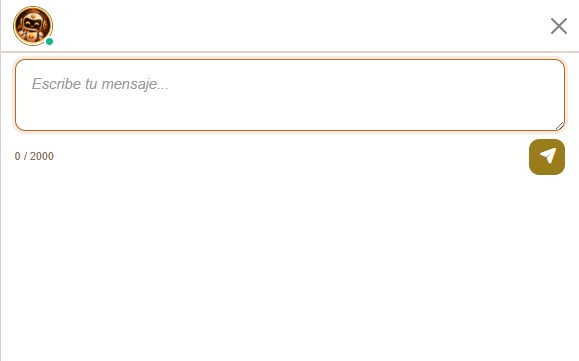
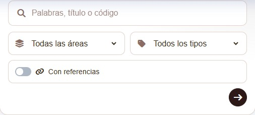
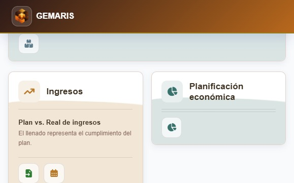

01 — ÁREAS
Módulos organizativos
Reúnen las responsabilidades de cada área. Su estructura objetivo aún debe validarse y desarrollarse.
Tecnología para organizaciones turísticas
GEMARIS se proyecta como una plataforma modular para organizar la gestión empresarial. Su estructura conecta módulos, tableros y servicios; su desarrollo avanza por etapas.
El nombre y su propósito
Una propuesta para explicar el nombre: Gestión Empresarial Modular para la Administración de Recursos, Información y Servicios. La animación muestra cómo cada letra representa una pieza de la visión de GEMARIS.
El nombre cobra forma
El isotipo se descompone en piezas, estas explican cada letra y al final el emblema se reconstruye.
La visión se organiza en módulos, tableros y servicios concretos:
Reúnen las responsabilidades de cada área. Su estructura objetivo aún debe validarse y desarrollarse.
Agrupan departamentos o procesos relacionados dentro de cada módulo.
Representan funciones y flujos de trabajo concretos dentro de los tableros.
Dirección General supervisa el conjunto; Auditoría y Control Interno atraviesan los módulos.
* Modelo conceptual sujeto a validación. La existencia de un módulo, tablero o servicio en la visión no significa que esté implementado.
Visión organizativa
La estructura reúne la información de cada área y muestra el avance de GEMARIS. Dirección General aparece en el nivel central; Auditoría y Control Interno atraviesan los módulos.
La información pública no pudo cargarse. Intenta actualizar la página.
Son transversales; no son módulos ni alteran la independencia de Auditoría.
Sobre el proyecto
La organización descrita es una referencia adaptable, no reproduce el organigrama vigente de la empresa objetivo y no implica que todas sus áreas estén implementadas.
Una mirada a la experiencia
Una mirada a las interfaces reales de GEMARIS: espacios donde la asistencia, la documentación y el trabajo contable empiezan a tomar forma.
Capturas reales del entorno de desarrollo, revisadas para excluir historiales y datos operativos. La interfaz sigue evolucionando.

Gema ya cuenta con una interfaz de chat en GEMARIS. Su visión es convertirse en una IA local que acompañe los procesos, apoye la consulta documental y facilite, gradualmente, la preparación de informes.

Un espacio integrado para organizar y buscar guías por área. Su conexión con los módulos acercará documentación vigente y dará a Gema una base para ofrecer asistencia más contextual.

El módulo conecta nomencladores contables con ZunAcc y avanza en planificación económica e informes: una base para organizar los datos y comprender mejor los movimientos.
Novedades y registro de cambios
Aquí se publican resúmenes seleccionados y revisados. Esta sección no refleja automáticamente el historial interno ni equivale a una versión liberada de GEMARIS.
Las novedades no pudieron cargarse. Intenta actualizar la página.
Nuestro enfoque
Las organizaciones trabajan con procesos que se relacionan entre sí. GEMARIS propone ordenarlos en módulos, tableros y servicios, con una Dirección General que visualiza el conjunto y funciones transversales de Auditoría y Control Interno.
El proyecto se encuentra en desarrollo. La página presenta su visión general y no anuncia disponibilidad comercial.
Ver estado del proyectoEstado actual
GEMARIS se desarrolla por etapas. La actividad actual se concentra en Contabilidad e Ingresos; RRHH, Comercial e Informática están en pausa y otras áreas permanecen en fase conceptual.
Contacto
Para consultas sobre el proyecto, puedes escribirnos por correo o WhatsApp.